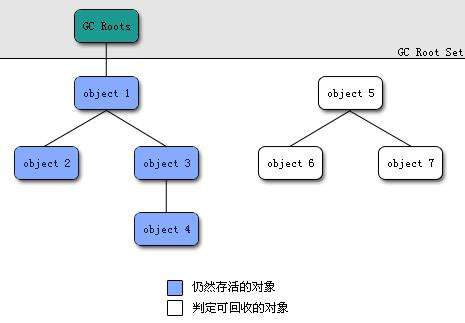

JAVA内存模型

-
类加载器（ClassLoader)
在JVM启动时或者在类运行时将需要的class加载到JVM中 -
执行引擎
负责执行class文件中包含的字节码指令 -
本地接口
主要是调用C或C++实现的本地方法 -
内存区
内存区主要包含5个部分：-
方法区：存储类结构信息的地方，包括常量池、静态变量、构造函数等，是各个线程共享的内存区域，注意方法区包含一个运行时常量池。
-
Java堆：也叫动态内存，通常使用new来申请分配一个内存，存储java实例或者对象的地方，这块是GC的主要区域。
-
Java栈：java栈总是和线程关联在一起，每当创建一个线程时，JVM就会为这个线程创建一个对应的java栈。在这个java栈中又会包含多个
栈帧，每运行一个方法就创建一个栈帧，用于存储局部变量表、操作栈、方法返回值等。每一个方法从调用直至执行完成的过程，就对应一个栈帧在java栈中入栈到出栈的过程。 -
本地方法栈：和java栈的作用差不多，只不过是为JVM使用到的native方法服务的
-
程序计数器：用于保存当前线程执行的内存地址。由于JVM程序是多线程执行的（线程轮流切换），所以为了保证线程切换回来后，还能恢复到原先状态，就需要一个独立的计数器，记录之前中断的地方，程序计数器也是线程私有的。因为使用很小的内存空间，它是唯一一个在Java虚拟机规范中没有规定任何OutOfMemoryError情况的区域。
-

栈帧存储了方法的局部变量表、操作数栈、动态连接和方法返回地址等信息，一个栈帧需要分配多少内存是在编译期间就完成分配的。

垃圾回收
JVM通过GC机制（内存垃圾回收）来释放回收堆和方法区中的内存，这个过程是自动执行的。GC会从根节点（GC Roots）开始对堆内存进行遍历，没有直接或者间接引用到根节点的就是需要回收的垃圾，会被GC回收掉。

哪些对象可以作为GC Roots呢？
- 栈帧（第一章的名词）中的引用对象。（栈中的）
- 静态属性引用的对象。（方法区中的）
- 常量引用的对象。（方法区中的）
- 本地方法栈中JNI引用的对象。（本地方法栈中的）
- 运行中的线程
虚拟机采用两次标记来判定对象最终是否需要被回收。
第一次标记所有不可达对象，同时筛选出一部分对象，筛选条件是这部分对象重写了finalize方法，且该方法还没有被执行，筛选出来的这部分对象会被加入F-Queue中，稍后进行第二轮标记，剩下未被帅选出来的，则直接判定为可回收。
第二轮标记由一个虚拟机自己建立的低优先级的 Finalizer 线程去执行，它会首先逐一执行 F-Queue 中每个对象的 finalize() 方法，然后再进行一轮标记，如果对象未能在finalize()方法中拯救自己，则经过这轮标记后，对象也就被判定为可回收。
垃圾回收算法
- 标记-清除算法
先标记需要回收的对象，然后原地清除标记的对象，缺点：产生大量不连续的内存碎片
- 复制算法
将可用内存化为两块，每次只用其中一块，当要回收的时候，把可用的对象复制到另外一块，然后把原先那块一次性清理掉，可以说在效率上大大的提高，但有个致命的缺点就是可用内存减半。广泛用于新生代内存，因为存活的对象通常比较少，复制算法效率高。
- 标记整理算法
将存活的对象整理移动到内存的一端，使他们紧凑排列，不留空白，是标记-清除算法的一种改进，因为该算法复制的次数较少，广泛应用在老年代中。
- 分代收集算法
新生代分为一个 Eden区和两个Survivor区。一个对象new出来后会在Eden Space（伊甸园），直到GC后如果还存活着就会被移到Survivor Space（幸存者区），如果是大对象，Survivor Space区存放不了，就直接进入老年区。
Survivor Space有两个区，一个是from Survivor（生活区）,一个是to Survivor（无人区）。GC每次扫描from Survivor区后会将存活对象移入to Survivor区，此时from Survivor变为无人区，to Survivor变为生活区，(两者功能交换了)，如此反复，经历过15次(假设)GC仍还存活的对象，会被晋升到老年区。

Minor GC是指新生代的垃圾收集，当Eden区被对象填满时，就会执行Minor GC, 主要采用标记 - 复制算法。
Old GC是指老年代GC，主要采用标记整理算法。
Full GC是针对整个新生代、老生代的全局范围的GC，采用分代收集算法。